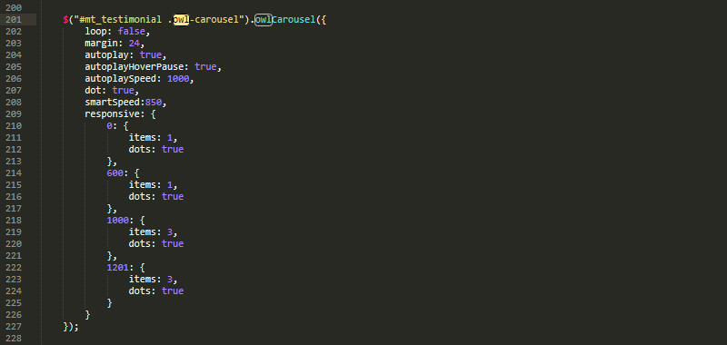

Starcross is a best landing page for Business, Professional, Company and Consulting Services. This template has smooth animation, clean features, modern and unique design which make your website more beautiful. This template was built in HTML5 and CSS3, with parallax image effects and CSS animations to make it even more appealing and dynamic. It has a fully responsive grid structure built with Bootstrap framework, it’s retina ready and compatible with all major web browsers and devices (desktop, notebook, tablet and mobile).
Starcross template comes with 24 valid HTML files, custom color schemes and beautiful typography elements. And The template is build based on the Bootstrap framework v3.3.7 along with the latest HTML/CSS and jQuery library to achieve a stunning effect. Therefore, any developer can easily customize the template as per requirement.
Whole template is divided in to several folders and their content defines by the folder names easily.
Starcross is based on Bootstrap Grid that can help you rapidly develop sites that look beautiful at any size, be it a laptop screen or mobile devices.
The syntax is simple and it's effective cross browser, but the awesome part is that it also has the flexibility to go mobile like a champ. You can really easily customize all part of site or build new.


To get started using the Google Maps click the button below, which guides you through the process of activating the Google Maps JavaScript API and any related services automatically.
Then paste your key to the Google API script at the bottom of HTML file:
<!-- Maps --> <script type="text/javascript" src="http://maps.google.com/maps/api/js?key=YOUR_API_KEY></script>
Map locations are stored in main.js file:
You don't need any special markup. Please follow like as below image.

For more informations, please visit http://kenwheeler.github.io/slick/
You don't need any special markup. Please follow like as below image.

For more informations, please visit http://www.idangero.us/swiper/
You don't need any special markup. Please follow like as below image.
Starcross - Creative Agency HTML Template used fontawesome, ionicon, Et-line etc. fonts for its icons requirement and no images has been used for any icon. A complete list of icons along with the class names can be found here:
To use an icon on any page of the theme use the below code:
All icons class name will always start with the fa- . There are several sizes for icons are predefined in the fonts.css inside css folder. i.e. fa-lg, fa-2x, fa-3x
All Images are taken from Pexel. All photos published on Unsplash are licensed under Creative Commons Zero which means you can copy, modify, distribute and use the photos for free, including commercial purposes, without asking permission from or providing attribution to the photographer or Unsplash.
Once again, thank you so much for purchasing this template. As I said at the beginning, I'd be glad to help you if you have any questions relating to this template. No guarantees, but I'll do my best to assist.
If you have a more general question relating to the template on ThemeForest, basic HTML/CSS/JavaScript related questions, you might consider visiting the forums and asking your question in the "Item Discussion" section.
Best Regards,
CN-InfoTech